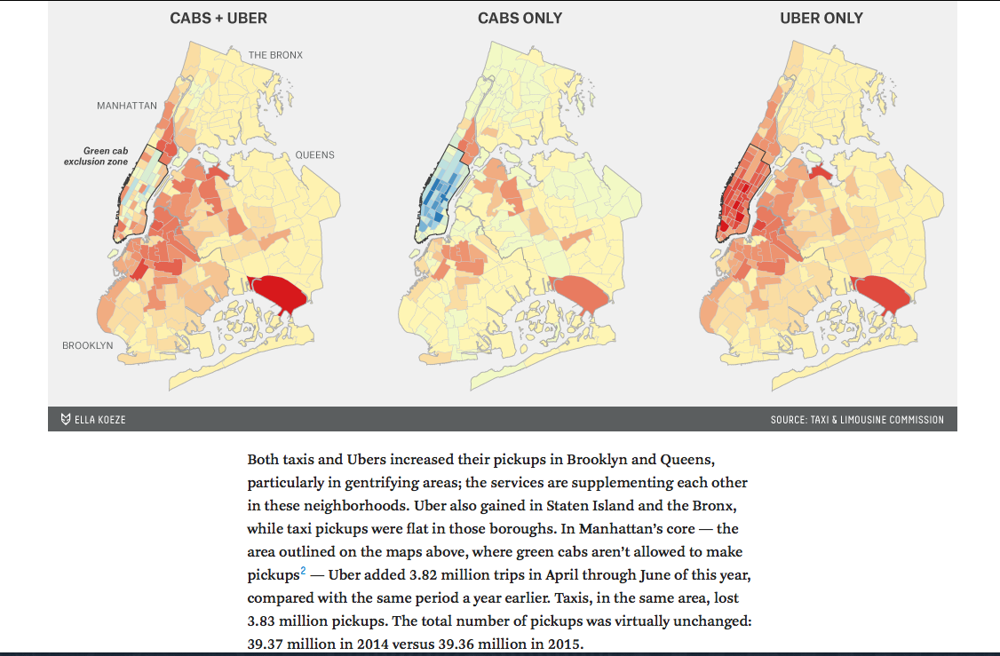
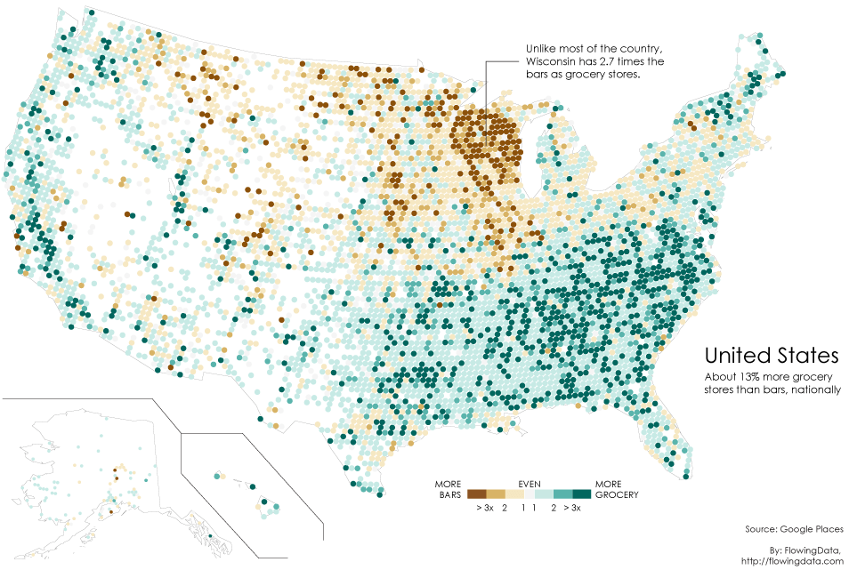
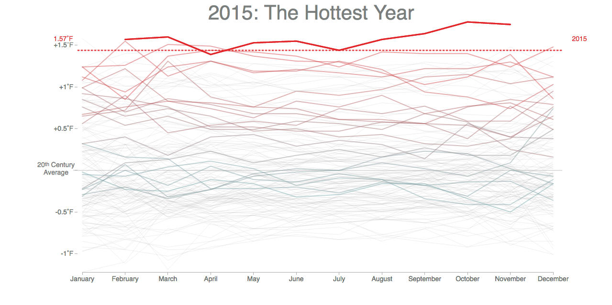
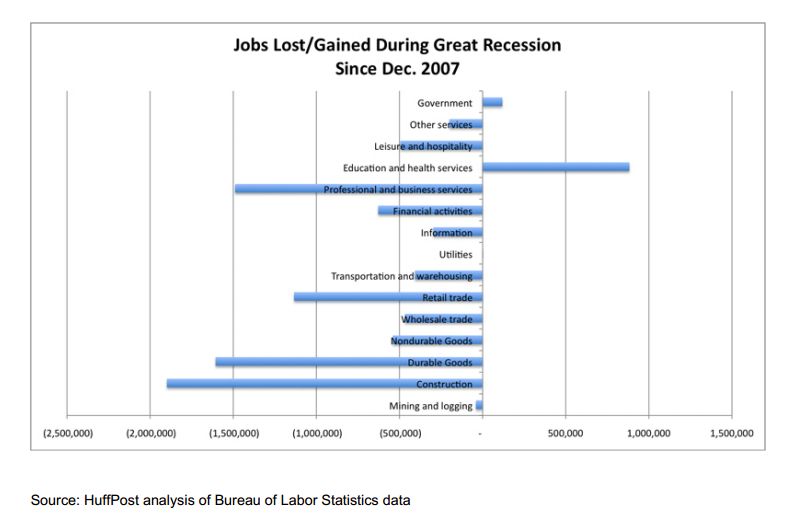

Telling Stories with Data Visualizations
Alison Blaine
NCSU Libraries
ablaine@ncsu.edu
Who I am
- librarian
- teach workshops on data viz
- D.H. Hill Library
- I <3 consultations
-
photo by Thegreenj
Goals
- help you get better grades, land a great job, and have a happy life
- teach you how to make better data visualizations
- that's it
Today's Talk:
How to tell a story with your data visualization
(OK. So what types of stories are there?)
Story types
see handout!
- the most interesting point story. (don't eat red #3)
- the correlation story - how 2 things relate (diapers/beer)
- the comparison story (noise level inside sports arenas)
- the change over time story (E-cigarette use among teens since 2011)
- the human interest/real life connection story
Activity
- Summarize the main story of each chart.
- Identify the type of story being told.
- What improvements are needed to better communicate the story?
Discuss with your neighbors in small groups
Graph should stand alone
& not require reading the fine print/text of a document

Annotation makes it better

Highlight what is important

Source: Bloomberg
Finding the Story in Your Data
Speed Data-ing
Find a story to tell about this data
Visualizing Your Data Story
Mediocre at Best
Can we do better than this??

Source
Open millenialjobs.xls in Tableau
Add title and reference line
Create a dashboard to add annotation & highlighting
Label reference line and add other annotations
Move legend and save to Tableau Public
Remember 5 things:
- Annotate your charts to communicate what you want people to know
- Highlight what is important -- color can help with this
- Label information close to the data points
- Use titles to help tell the story
- Your graph should stand alone
{kind=link}